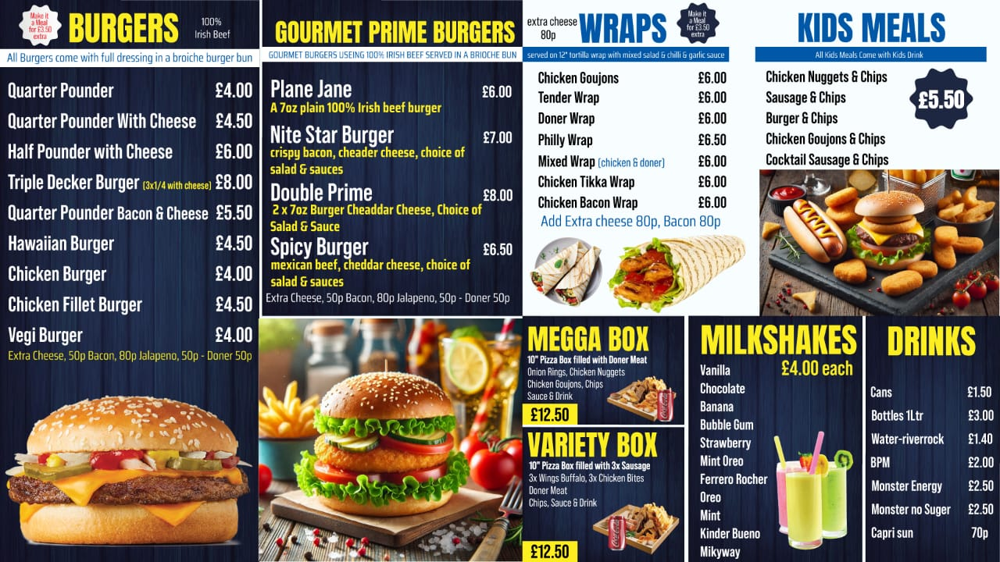

Give your restaurant a professional look with creative animated menu videos, digital menu board designs and eye-catching food advertising graphics. We provide professional restaurant design services for takeaway shops, fast food restaurants, cafes, pizza shops, burger shops and food businesses across the UK, USA and Europe.

Make your food menu more attractive with professionally designed animated restaurant menu videos. We create engaging motion graphics, animated food advertisements, promotional videos and digital menu screen designs for restaurants. Highlight your food items, prices, special offers and combo deals with clean and attractive animations.
We design professional digital menu boards for restaurant TV screens, LED displays and digital signage. Whether you need a single restaurant menu screen or multiple screens for your takeaway business, we create modern, easy-to-read and visually appealing designs.
Need a creative printed menu for your restaurant? We design professional restaurant menu cards, takeaway menus and fast food menus in different sizes and layouts. Get a custom menu design that presents your food, prices and categories in an attractive and organised way.
Creative menu designs for burgers, pizzas, kebabs, sandwiches, snacks, fried chicken and takeaway restaurants.
Professional single-page, double-sided A4 and A3 restaurant menu card designs.
Custom bifold and trifold takeaway menu designs with attractive layouts and organised food categories.
Modern and creative food menu card designs for cafes, restaurants, snack bars and food businesses.
Professional restaurant business card design to promote your food business and build a strong brand identity.
Promotional flyer and poster designs for restaurant offers, special deals, food launches and advertising campaigns.
Creative restaurant banner and promotional graphics for takeaway shops, food businesses and advertising displays.
Complete promotional design services for new restaurant openings, including menus, posters, banners, business cards and animated advertisements.
Promote your restaurant with professional food advertising graphics and animated promotional videos. We create attractive visuals for new food launches, special discounts, meal deals, combo offers and restaurant promotions. Our designs help your food business maintain a consistent and professional visual identity.
From digital menu boards and animated food videos to printed menu cards, business cards, flyers, posters and banners, we provide a range of creative graphic design services for restaurants and takeaway businesses. Every design is prepared according to your logo, brand colours, menu content and business requirements.
We focus on clean layouts, attractive food presentation, readable menu prices and professional typography. Whether you are opening a new takeaway shop or updating an existing restaurant menu, we can help you create professional digital and printed promotional designs.
Our services are available for restaurant owners and food businesses in the United Kingdom, United States and Europe. Final designs can be prepared in suitable digital or print-ready formats according to your project requirements.
Ready to upgrade your restaurant menu, digital screens or promotional graphics? Send your menu details, logo, food images, prices and design requirements. We will help you create a professional design for your restaurant.
Contact Us on WhatsApp